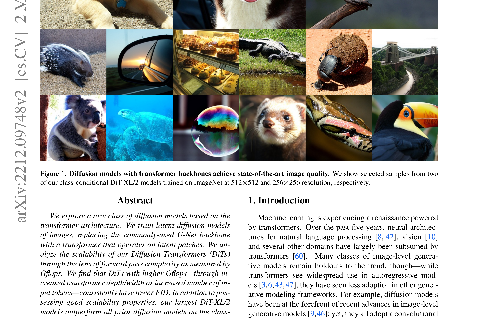
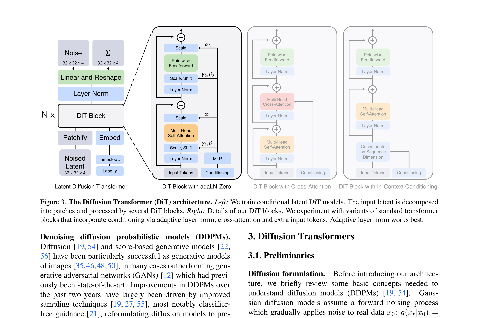
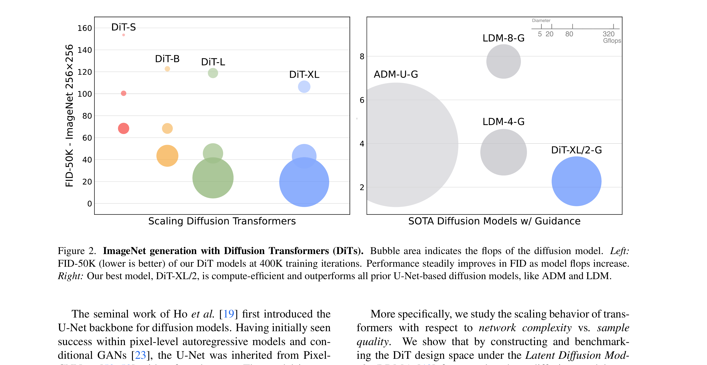

Scalable Diffusion Models with Transformers
引言：用 Transformer 取代 UNet
扩散模型（Diffusion Models）在图像生成上取得了巨大成功，但所有工作都基于 U-Net 架构。
与此同时，Transformer 已经在 NLP、视觉、强化学习等领域展现出优异的 scaling 特性——
模型越大、计算越多，性能就越好。为什么扩散模型还在用 U-Net？
这篇论文首次提出 Diffusion Transformers (DiT)：用 Vision Transformer 取代 U-Net 作为扩散模型的 backbone，
并证明 DiT 同样具有出色的 scaling 特性，最大的 DiT-XL/2 模型在 ImageNet 256×256 上达到 SOTA FID 2.27。

UNet 的 inductive bias 并非扩散模型性能的关键。传统观点认为 U-Net 的局部卷积 + 跳跃连接对图像生成很重要， 但 DiT 证明纯 Transformer 结构配合合适的 conditioning 机制，不仅能匹配 U-Net 性能，还能更好地随规模扩展。
"We explore a new class of diffusion models based on the transformer architecture. We train latent diffusion models of images, replacing the commonly-used U-Net backbone with a transformer that operates on latent patches."
背景：Latent Diffusion Models
要理解 DiT，需要先理解 Latent Diffusion Models (LDM)。 DiT 不是在像素空间直接做扩散，而是在 VAE 编码的 latent space 中操作，这大大降低了计算成本。
2.1 Latent Diffusion 流程
LDM 包含两个阶段：
- VAE 编码：用预训练的变分自编码器将图像 $x$ 压缩为 latent $z = E(x)$，通常下采样 8 倍（256×256 → 32×32）
- Latent 扩散：在 latent space 中训练扩散模型学习 $p(z)$，生成时采样 $z$ 再用 VAE 解码器还原 $x = D(z)$
直接在像素空间（256×256×3）训练扩散模型计算成本太高。 VAE 将空间压缩 8 倍后（32×32×4），计算量降低约 64 倍，同时保留足够语义信息生成高质量图像。
2.2 Diffusion Models 基础
扩散模型通过两个阶段工作：
- 前向过程：向数据 $x_0$ 逐步添加高斯噪声，经过 $T$ 步后变为纯噪声 $x_T \sim \mathcal{N}(0, I)$
- 反向过程：训练神经网络 $\epsilon_\theta$ 预测噪声，逐步去噪恢复数据
- $\mathcal{L}_{\text{simple}}$
- "Simple" 损失函数，DDPM 论文提出的简化版训练目标
- $\mathbb{E}_{x_0, \epsilon, t}$
- 对三个随机变量取期望（平均）：干净图像 $x_0$、随机噪声 $\epsilon$、时间步 $t$
- $x_t$
- 加噪后的图像：$x_t = \sqrt{\bar{\alpha}_t} x_0 + \sqrt{1-\bar{\alpha}_t} \epsilon$
即原始图像 $x_0$ 与噪声 $\epsilon$ 的加权混合，$t$ 越大噪声占比越高 - $\epsilon_\theta(x_t, t)$
- 神经网络预测：输入加噪图像 $x_t$ 和时间 $t$，输出预测的噪声
- $\epsilon$
- 真实噪声：我们实际加进去的那部分噪声（ground truth）
- $\| \cdot \|^2$
- L2 范数的平方 = MSE（均方误差），让预测尽量接近真实噪声
这个 loss 在训练网络做一件事："看着这幅被噪声污染的图像，告诉我噪声长什么样"。
训练时随机选时间步 $t$：
• $t$ 小（如 $t=50$）：图像几乎干净，噪声很少 → 网络要学会识别微小噪声
• $t$ 大（如 $t=900$）：图像几乎全是噪声 → 网络要学会从纯噪声中提取信号
网络学会后，就能从纯噪声 $x_T$ 开始，一步步预测并去除噪声，最终还原出干净图像。
Q1: 为什么叫 "Simple" 简化版？
原始扩散模型（Ho et al. 2020）的目标函数包含变分下界（VLB）的完整推导，有多个加权项，实现复杂。 DDPM 作者发现：直接用一个简单的 MSE loss 预测噪声，效果几乎一样好，但实现简单得多。 这就是 "simple" 的由来——它是从复杂理论简化而来的实用版本。
Q2: 期望符号 $\mathbb{E}_{x_0, \epsilon, t}$ 到底什么意思？
你的理解完全正确！就是"预测噪声和实际噪声距离的均值"。
写法 $\mathbb{E}_{x_0, \epsilon, t}[\cdot]$ 是数学上的严谨表达，意思是：
• 从数据集中随机采样一张图 $x_0$
• 随机生成噪声 $\epsilon \sim \mathcal{N}(0,I)$
• 随机选时间步 $t \in [1, T]$
• 计算这对 $(x_0, \epsilon, t)$ 的 loss
• 重复很多次，取平均
三个下标表示三个随机变量都需要遍历，确保网络见过各种各样的训练样本。
Q3: 为什么预测噪声能生成图像？
关键在逆向思维：
1. 如果网络能准确预测"这幅图里有多少噪声"，那它就能减去这些噪声，得到更干净的图像
2. 从纯噪声 $x_T$ 开始，重复 T 次：预测噪声 → 减去噪声 → 得到 $x_{T-1}$
3. 最终 $x_0$ 就是生成的干净图像
类比：就像你有一幅被墨水弄脏的画，如果你知道墨水在哪里、有多少，就能把它擦掉还原原画。
网络学习的就是"识别墨水（噪声）"的能力。
方法：DiT 架构设计
上一节回顾了 LDM 背景，本节详细介绍 DiT 的三大设计决策： (1) 如何将 latent 转换为 transformer 能处理的 token（Patchify）； (2) DiT Block 的内部结构； (3) 如何把条件信息（timestep、class label）注入模型。
3.1 Patchify：Latent → Tokens
DiT 的核心是将 VAE 编码的 latent $z \in \mathbb{R}^{I \times I \times C}$ 转换为 token 序列。 具体做法：用 patch size $p$ 将空间维度切分，每个 patch 线性嵌入为 $d$ 维向量。
Patch size $p$ 是 DiT 设计空间的重要维度： 更小的 $p$ → 更多 token → 计算量更大（Gflops ∝ $1/p^2$）。 论文探索了 $p \in \{2, 4, 8\}$。
3.2 DiT Block 设计
DiT Block 基于标准 ViT 的 Transformer block，但关键是如何注入条件信息（timestep $t$ 和 class label $c$）。 论文探索了四种 conditioning 方式：
零初始化使得训练初期每个 residual block 都等价于 identity mapping（$x \rightarrow x$）， 网络从"不修改输入"开始学习，训练更稳定。这类似于 ResNet 的零初始化技巧，但对扩散模型特别重要。

3.3 DiT 设计空间总结
论文探索的完整设计空间包含三个维度：
- Patch size：$p \in \{2, 4, 8\}$，影响 token 数量和计算量
- Model size：S(12层)、B(12层)、L(24层)、XL(28层)，参数量从 33M 到 675M
- Conditioning：四种方式，adaLN-Zero 最佳
实验：Scaling Laws 与 SOTA
验证两个核心假设： (1) DiT 是否具有和 NLP/Vision Transformer 类似的 scaling 特性？ (2) DiT 能否达到甚至超越 U-Net 的 SOTA 性能？
4.1 Scaling 行为
论文训练了 12 个 DiT 配置（4 种模型大小 × 3 种 patch size），总训练计算量横跨两个数量级。 核心发现：

不同配置的 DiT（不同模型大小、不同 patch size）在相同 Gflops 下收敛到相似的 FID。 这说明计算量而非参数量是性能的关键。 将 patch size 减半（token 变 4 倍）和将模型深度加倍，对性能的影响类似。
4.2 与 SOTA 对比
在 ImageNet 256×256 和 512×512 上，DiT-XL/2 超越了所有 prior U-Net-based 扩散模型：
| 模型 | 参数 | Gflops | FID-50K ↓ |
| ADM | 554M | 1120 | 10.94 |
| ADM-U | 395M | 742 | 9.96 |
| LDM-4 | 400M | 103 | 10.56 |
| DiT-XL/2 (ours) | 675M | 118 | 9.62 |
DiT-XL/2 仅用 118 Gflops 就达到 FID 9.62，而 ADM 需要 1120 Gflops（9.4 倍计算量）才能达到类似效果。 Transformer 架构的计算效率明显高于 U-Net。
4.3 Classifier-Free Guidance
DiT 同样支持 classifier-free guidance（CFG），通过随机 dropout 10% 的条件信息训练， 推理时可以用 guidance scale $s$ 控制样本质量和多样性 trade-off。
结论与影响
DiT 证明了 Transformer 可以完全取代 U-Net 成为扩散模型的 backbone， 同时继承 Transformer 家族的优异 scaling 特性。这项工作为后续所有 "X-DiT" 奠定了基础： Video DiT、Action DiT、3D DiT... 扩散模型正式进入 Transformer 时代。
对后续工作的影响
论文主要局限在于仅在 class-conditional ImageNet 上验证，未涉及 text-to-image 等更复杂的条件生成。 后续的 Stable Diffusion 3、Sora 等工作填补了这些空白。
MotionWAM 的 Video DiT 和 Motion DiT 都基于 DiT 架构。 Video DiT 继承自 Cosmos-Predict2.5（基于 DiT 的视频预测模型）， Motion DiT 则基于 DiT4DiT（将 DiT 用于动作预测）。 DiT 的 modular 设计和良好 scaling 特性使其成为 world-action modeling 的理想选择。